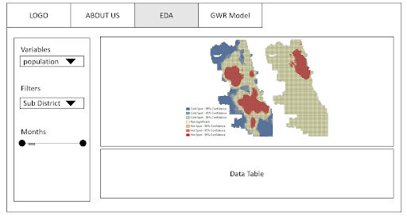
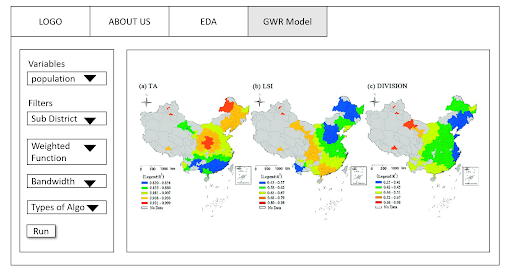

Geographical Weighted Regression on Seoul’s financial crimes
1 Project Title:
Mapping spatial variation in crime using Geographically Weighted Regression
2 Project Motivation
Financial crimes around the world have been on the rise. In particular, Seoul has maintained its crime rates to be relatively consistent with its other regions despite having the highest population density in South Korea. One possible reason could be because the number of police officers in Seoul have been increasing. In 2011, there were approximately 24990 police officers and by 2016, the number of police officers amounted to 27350. However, this is just an assumption, which is why to test this assumption, it brings us to our project objective.
3 Projects Objective
The objective of this project is to allow the end-user to use our model in assessing what are the key factors that influence financial crimes and how much these factors explain the high/low financial crime rates in the country of their choice. The results of this model will hopefully provide insights on how to reduce the occurrence of financial crimes to the user. By using Seoul, we hope to showcase how our app operates so that our model can be applied to your selected country.
4 Data
5 Literature Review
The purpose of this review aims to explore the potential of Geographically Weighted Regression (GWR) analysis for understanding the spatial patterns of financial crime in South Korea.
A Korean researcher used GWR analysis to examine the relationship between crime and socio-economic factors in Seoul, South Korea. The study found that the spatial patterns of crime vary across different regions of the city and that the relationship between crime and socio-economic factors is also spatially variable. The models they use include the Spatial Error Model, Multiple Regression, Bayesian Hierarchical Mode and many more, to compare the different independent variables.
GWR analysis can be applied to financial crime in South Korea to identify the spatial patterns of different types of financial crime and to explore the relationship between financial crime and socio-economic factors at the local level.
For example, the methodology can be used to examine the relationship between financial crime and factors such as income, education, and unemployment at the local level. This can provide insights into the underlying drivers of financial crime in different regions of South Korea and can inform the development of more effective policies for preventing and combating financial crime.
Thus, GWR analysis is a promising methodology for understanding the spatial patterns of financial crime in South Korea. While there is limited research on the application of GWR analysis to financial crime in South Korea, further research in this area could contribute to the development of more effective strategies for preventing and combating financial crime in South Korea.
Another research example uses GWR analysis to examine the relationship between crime and social economic factors in the Chicago neighbourhood. The researcher found that the relationship between poverty and crime varied across different neighbourhoods. With poverty having a stronger effect on crime in certain areas.
They use the Spatial Durbin Model to define influences of neighbours and find significant association between neighbourhood social capital and crime victimisation. We believe that this can be applied to our project as we can find the null association between neighbourhood socio-economic factor and crime.
Kernel Density Estimation of Crime in India
The researchers visualised the crime hotspots using the Kernel Density Estimation and were able to pinpoint districts with a high concentration of crime. It was also shown that bandwidth influences the Kernel Density estimations.
We can consider doing Kernel Density estimation in our project to identify the key hotspots in Seoul. This may provide insights as to what variables that can be considered that may be specific to a particular district.
6 Story Board
- EDA & DATA TABLE

- GWR Model

7 Timeline

8 References
https://www.sciencedirect.com/science/article/abs/pii/S027795361200593X
https://www.researchgate.net/profile/Prathap-Rudra-Boppuru/publication/339068025_Geospatial_Crime_Analysis_to_Determine_Crime_Density_Using_Kernel_Density_Estimation_for_the_Indian_Context/links/6020bf97299bf1cc26ae8223/Geospatial-Crime-Analysis-to-Determine-Crime-Density-Using-Kernel-Density-Estimation-for-the-Indian-Context.pdf